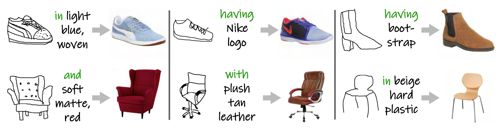
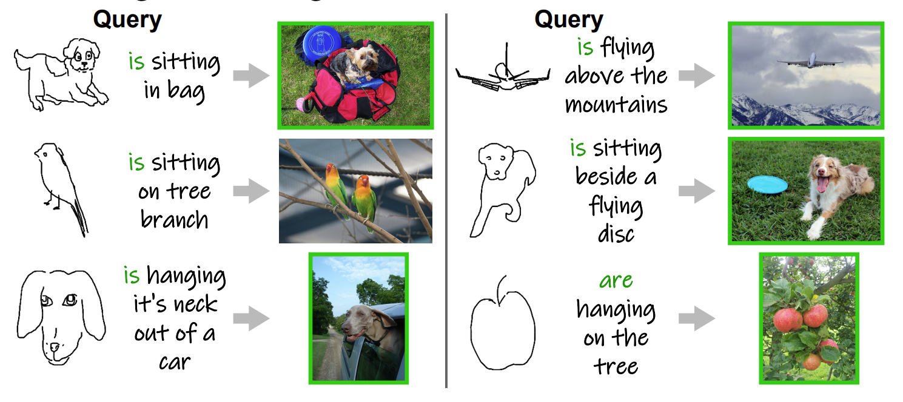
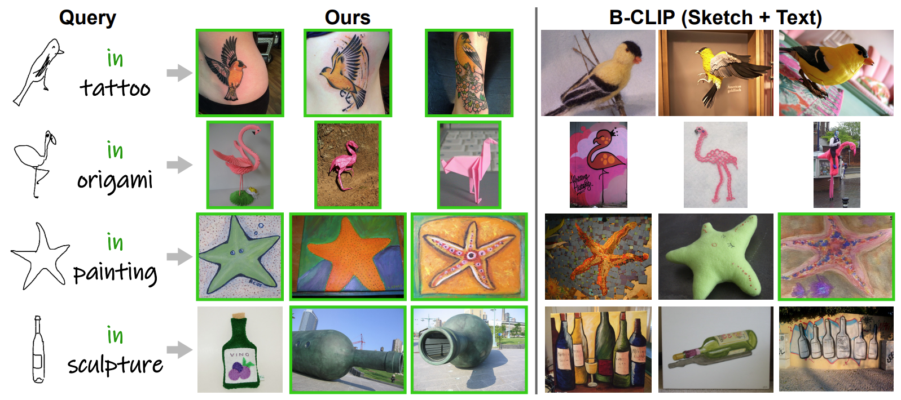
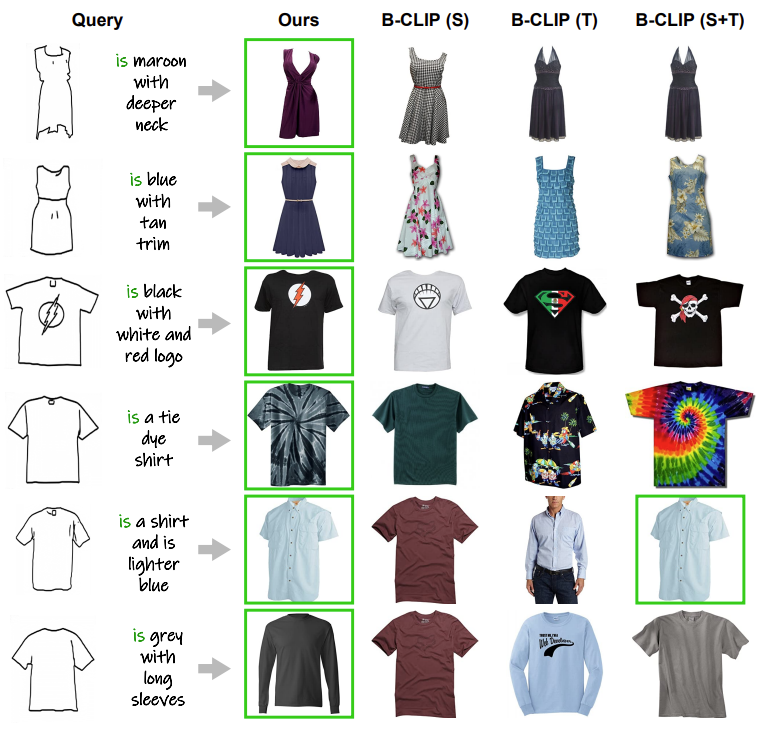
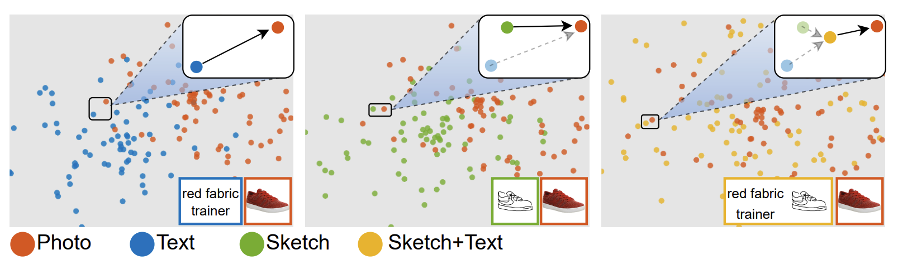
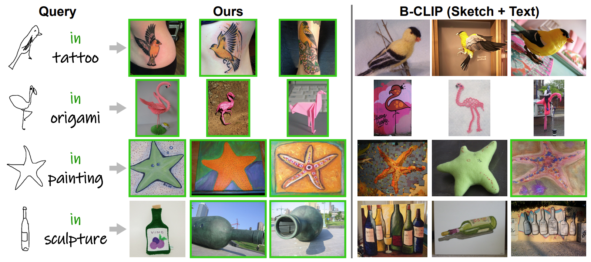
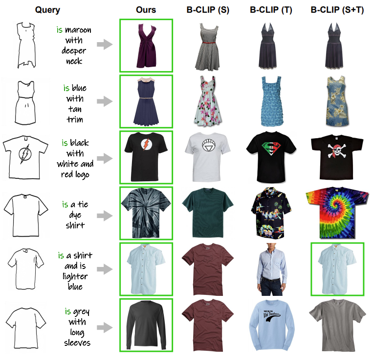
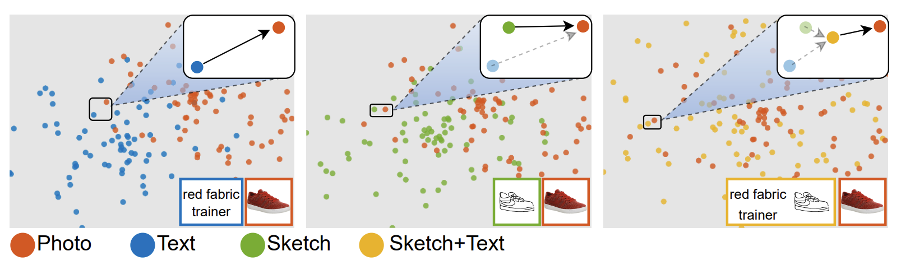
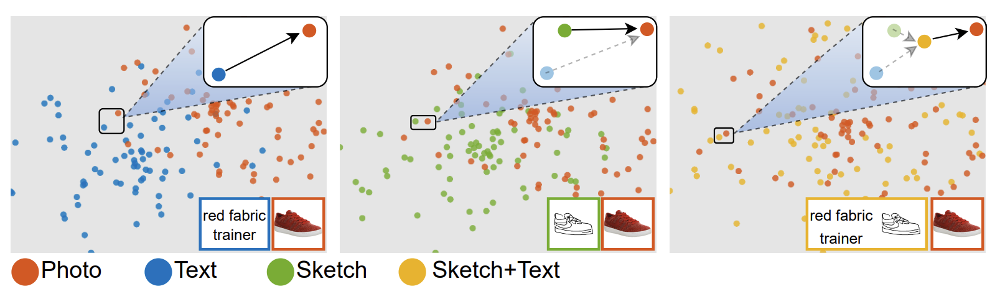

Abstract
Two primary input modalities prevail in image retrieval: sketch and text. While text is widely used for
inter-category retrieval tasks, sketches have been established as the sole preferred modality for
fine-grained image retrieval due to their ability to capture intricate visual details. In this paper, we
question the reliance on sketches alone for fine-grained image retrieval by simultaneously exploring the
fine-grained representation capabilities of both sketch and text, orchestrating a duet between the two.
The end result enables precise retrievals previously unattainable, allowing users to pose ever-finer
queries and incorporate attributes like colour and contextual cues from text. For this purpose, we
introduce a novel compositionality framework, effectively combining sketches and text using pre-trained
CLIP models, while eliminating the need for extensive fine-grained textual descriptions. Last but not
least, our system extends to novel applications in composed image retrieval, domain attribute transfer,
and fine-grained generation, providing solutions for various real-world scenarios.
Architecture
Results
Top-5 fine-grained retrieval result comparison on ShoeV2/ChairV2. GT photos are
green-bordered.

Qualitative results for sketch+text composed fine-grained generation with pre-trained
StyleGAN2 models.

Qualitative result for object sketch-based scene image retrieval on FS-COCO. GT photos
are green-bordered.

Top-3 domain attribute transfer results comparison on ImageNet-R. GT photos are
green-bordered.

Qualitative comparison with baselines for sketch+text
composed fashion image retrieval on FashionIQ. GT photos
are green-bordered. Notably, even though the images retrieved by
B-Sketch+Text are mostly of the same shape as the query sketch,
they lack the desired appearance given by textual description.

t-SNE plots showing the feature distances for text-based,
sketch-based, and composed retrieval. Compared to sketch/text-based retrieval,
combining sketch and text pushes the composed
embedding closer to the ground truth photo in the latent manifold.
Qualitative result for object sketch-based scene image retrieval on FS-COCO. GT photos
are green-bordered.

Top-3 domain attribute transfer results comparison on ImageNet-R. GT photos are
green-bordered.

Qualitative comparison with baselines for sketch+text
composed fashion image retrieval on FashionIQ. GT photos
are green-bordered. Notably, even though the images retrieved by
B-Sketch+Text are mostly of the same shape as the query sketch,
they lack the desired appearance given by textual description.

t-SNE plots showing the feature distances for text-based,
sketch-based, and composed retrieval. Compared to sketch/text-based retrieval,
combining sketch and text pushes the composed
embedding closer to the ground truth photo in the latent manifold.
Qualitative comparison with baselines for sketch+text
composed fashion image retrieval on FashionIQ. GT photos
are green-bordered. Notably, even though the images retrieved by
B-Sketch+Text are mostly of the same shape as the query sketch,
they lack the desired appearance given by textual description.

t-SNE plots showing the feature distances for text-based,
sketch-based, and composed retrieval. Compared to sketch/text-based retrieval,
combining sketch and text pushes the composed
embedding closer to the ground truth photo in the latent manifold.
BibTeX
@inproceedings{koley2024handle,
title={{You'll Never Walk Alone: A Sketch and Text Duet for Fine-Grained Image Retrieval}},
author={Koley, Subhadeep and Bhunia, Ayan Kumar and Sain, Aneeshan and Chowdhury, Pinaki Nath and Xiang, Tao and Song, Yi-Zhe},
booktitle={CVPR},
year={2024}
} 
Copyright: CC BY-NC-SA 4.0 © Subhadeep Koley | Last updated: 07 April 2024 | Good artists copy, great artists steal.